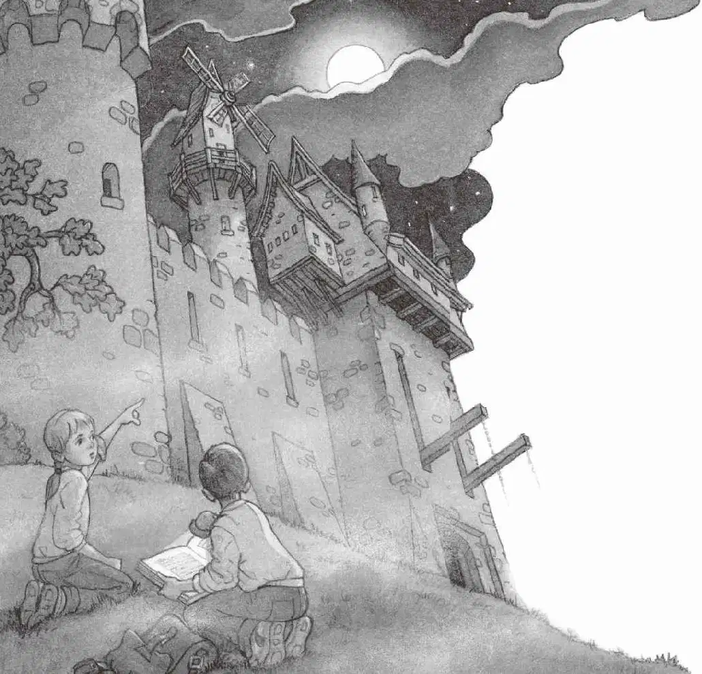

安妮站在树下，望着面前迷雾笼罩的地面。
“我想，骑士是往那座桥去了，桥是通向城堡的。”安妮说。
“等等，把手电筒给我，让我查一下。”杰克说。
他从安妮手里接过手电筒，把骑士和城堡书从书包里抽出来，翻到了夹着皮书签的那一页。
在一幅骑士的图片下面有这么一行字，杰克将它读了出来：
这位骑士要去参加城堡宴会。
当他踏上漫长而危险的旅程时会穿戴盔甲。
盔甲十分沉重，单是一个头盔就重达十八千克。
哇，杰克五岁的时候体重是十八千克，这么算来，骑士戴头盔的时候就像顶着一个五岁孩子呢。
杰克掏出笔记本。他想做一些笔记，就像在恐龙谷时做的那样。
他在本子上写道：
还有什么呢？
他翻看着骑士和城堡书，突然发现有一幅图上画了一座城堡和它周围的建筑。
“那名骑士正在过桥，”安妮说，“他穿过大门……不见了。”
杰克低下头，在图上找到了那座桥。他把图片下面的文字读了出来：
这是护城河上的一座吊桥。
护城河里蓄满了水，保护城堡不受敌人侵犯。
有些人认为护城河里养着鳄鱼。

杰克在笔记本上写道：
“快看！”安妮一边说，一边透过迷雾向远处张望，“一架风车！就在那儿！”
“这儿也有一架风车呢。”杰克指着图片说。
“看那架真的风车，杰克，别看书上的。”安妮说。
突然，一阵刺耳的尖叫声划破天际。
“哎呀！”安妮指着前方叫道，“听起来像是从那个小房子里传出来的！”
“这儿也有一座小房子。”杰克说。
杰克一边端详着图片，一边念出下面的文字：
鹰房位于城堡外墙内，老鹰经过训练，会猎捕其他鸟类和小动物。
杰克在笔记本上写道：
“我们现在肯定已经进入城堡的外墙了。”杰克说。
“你听！”安妮轻声说，“听见了吗？鼓声！号角声！都是从城堡里传出来的，我们去看看吧。”
“等等。”杰克又翻了几页书说。
安妮急了，叫道：“杰克！我想看的是真实发生的事情，而不是书里写的那些东西。”
“可是你看看这个！”杰克指着另一幅图，上面画的是一场盛大的宴会，一些男人站在门口敲鼓和吹号角。
杰克念道：
宴会是在大礼堂举行的。敲鼓、吹号角是为了告诉大家宴会中各种不同的菜肴。
“你就看你的书吧，我要去参加真正的宴会了。”安妮说。
“等一等。”杰克正在认真地看着那幅图片，画面上有一个年纪与他相仿的男孩用托盘端着食物，里面有烤全猪和馅饼，还有浑身带羽毛的孔雀。
“孔雀？”杰克有点儿纳闷儿，随即写下：
杰克把书举起来给安妮看：“你看，他们好像在吃——”
“咦？安妮呢？”杰克透过迷雾四处张望。
这时，杰克才听见真实的鼓声和真实的号角声，看见真实的鹰房、真实的风车和真实的护城河。
他看见安妮冲过了真实的吊桥，消失在通向城堡的大门里。